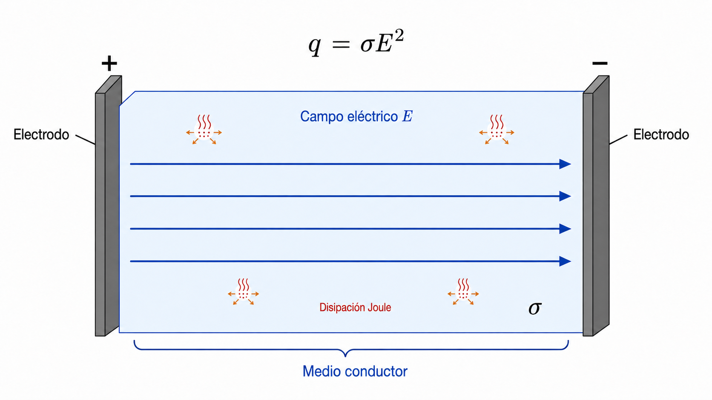
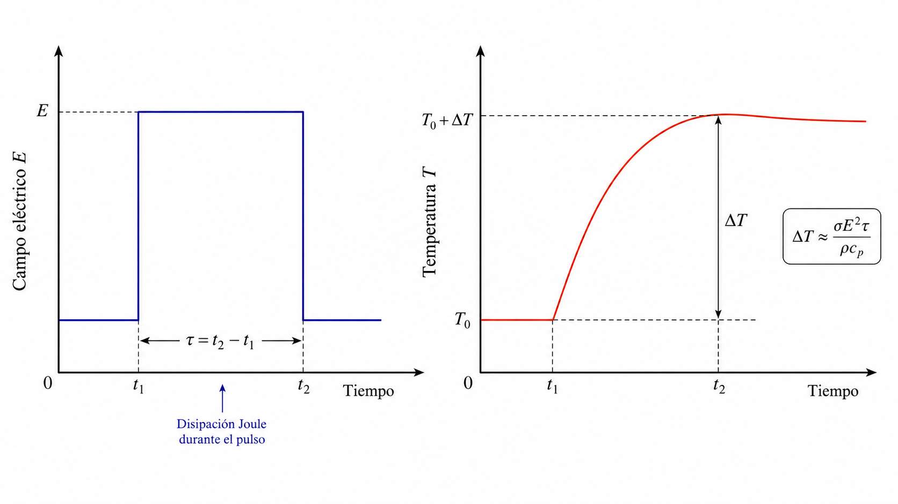

Calentamiento Joule durante pulsos eléctricos
Estimación del aumento de temperatura asociado a la disipación eléctrica
1 Propósito del módulo
Este módulo construye una estimación mínima del aumento de temperatura producido por disipación eléctrica durante la aplicación de pulsos en electroporación.
El objetivo no es desarrollar un modelo térmico completo, sino mostrar cómo la conductividad del medio, la magnitud del campo eléctrico y la duración del pulso determinan el calentamiento aproximado del sistema. Esta estimación permite distinguir condiciones predominantemente no térmicas de escenarios en los que el calentamiento puede contribuir al daño celular, a cambios en la permeabilidad de la biomembrana o a efectos irreversibles.
Este módulo puede recorrerse de manera autónoma; se recomienda haber revisado previamente el módulo sobre regímenes de operación para contextualizar cuándo el calentamiento es relevante.
2 Potencia volumétrica disipada: origen de \(q = \sigma E^2\)
2.1 De la ley de Ohm microscópica a la potencia disipada
Cuando un campo eléctrico \(\mathbf{E}\) se aplica sobre un medio conductor, los portadores de carga libres —en el caso de un electrolito, los iones— se ponen en movimiento. La relación entre el campo y la densidad de corriente \(\mathbf{J}\) (corriente por unidad de área, en A/m²) viene dada por la ley de Ohm en forma local o microscópica (Griffiths 1999):
\[ \mathbf{J} = \sigma\,\mathbf{E} \tag{1}\]
donde \(\sigma\) es la conductividad eléctrica del medio (en S/m). Esta ecuación es la forma diferencial de la ley de Ohm: en lugar de relacionar voltaje total con corriente total en un componente macroscópico, relaciona en cada punto del espacio el campo local con la densidad de corriente local.
La potencia eléctrica disipada por unidad de volumen en ese mismo punto —es decir, la tasa de conversión de energía eléctrica en calor— es el producto escalar entre la densidad de corriente y el campo que la impulsa:
\[ q = \mathbf{J} \cdot \mathbf{E} \tag{2}\]
Sustituyendo la ley de Ohm local (ecuación Ecuación 1) en la ecuación (Ecuación 2):
\[ q = (\sigma\,\mathbf{E}) \cdot \mathbf{E} = \sigma\,|\mathbf{E}|^2 = \sigma\,E^2 \tag{3}\]
donde \(E = |\mathbf{E}|\) es la magnitud del campo eléctrico (en V/m). La potencia volumétrica disipada \(q\) (en W/m³) es la que da nombre al efecto Joule: toda la corriente que circula por el medio encuentra una resistencia al movimiento de los iones, y esa fricción microscópica se manifiesta macroscópicamente como generación de calor.
La dependencia cuadrática con el campo eléctrico tiene una consecuencia práctica importante: si el campo se duplica, la potencia disipada aumenta aproximadamente cuatro veces.
La Figura 1 ilustra este proceso: el campo eléctrico impulsa una corriente a través del volumen conductor, y la disipación aparece distribuida en todo el volumen.

3 Balance térmico mínimo
3.1 Ecuación de carga térmica adiabática
Para estimar el aumento de temperatura, se parte de un balance de energía local. Si se considera un pulso corto y se desprecia, en primera aproximación, la pérdida de calor por conducción, convección o radiación durante el intervalo del pulso —hipótesis adiabática—, la energía disipada por Joule se convierte íntegramente en aumento de temperatura del medio. El balance local queda (Yarmush et al. 2014):
\[ \rho\,c_p\,\frac{dT}{dt} = q = \sigma\,E^2 \tag{4}\]
donde \(\rho\) es la densidad del medio (en kg/m³), \(c_p\) es el calor específico a presión constante (en J/(kg·K)) y \(T\) es la temperatura (en K o °C). El producto \(\rho c_p\) (en J/(m³·K)) es la capacidad térmica volumétrica: representa la energía necesaria para aumentar en 1 K la temperatura de un metro cúbico de medio. Cuanto mayor sea \(\rho c_p\), más resistente es el medio al calentamiento.
La justificación de la hipótesis adiabática es que, para pulsos cortos (\(\tau \ll \tau_{\mathrm{diff}}\), donde \(\tau_{\mathrm{diff}} = L^2/\alpha\) es el tiempo de difusión térmica con \(\alpha = k_T/(\rho c_p)\) la difusividad térmica y \(L\) una escala espacial relevante), la temperatura no tiene tiempo de redistribuirse. Para agua a temperatura fisiológica, \(\alpha \approx 1.4 \times 10^{-7}~\mathrm{m^2/s}\); para \(L \sim 1~\mathrm{mm}\), \(\tau_{\mathrm{diff}} \sim 10~\mathrm{s}\), muy superior a la duración típica de pulsos de electroporación (ns a ms).
3.2 Aumento de temperatura bajo pulso rectangular
Si el campo eléctrico se mantiene aproximadamente constante durante un pulso de duración \(\tau\) (en s), se puede integrar la ecuación (Ecuación 4):
\[ \rho\,c_p \int_{T_0}^{T_0+\Delta T} dT = \sigma\,E^2 \int_0^\tau dt \]
lo que da directamente:
\[ \rho\,c_p\,\Delta T = \sigma\,E^2\,\tau \]
y despejando el aumento de temperatura aproximado:
\[ \boxed{ \Delta T \approx \frac{\sigma\,E^2\,\tau}{\rho\,c_p} } \tag{5}\]
La Figura 2 ilustra la relación entre el pulso eléctrico rectangular de duración \(\tau\) y el aumento de temperatura resultante.

La ecuación (Ecuación 5) revela tres dependencias:
- \(\Delta T\) crece linealmente con la conductividad \(\sigma\): un medio más conductor genera más corriente y disipa más potencia.
- \(\Delta T\) crece linealmente con la duración del pulso \(\tau\): la energía disipada se acumula con el tiempo.
- \(\Delta T\) crece cuadráticamente con el campo eléctrico \(E\): duplicar el campo cuadruplica el calentamiento.
Por esta razón, pequeños incrementos en el campo eléctrico pueden producir aumentos térmicos notables, especialmente en medios de alta conductividad o bajo protocolos con pulsos largos o repetidos.
4 Ejemplo numérico
Supongamos un medio acuoso con valores aproximados:
\[ \sigma = 1~\mathrm{S\,m^{-1}}, \qquad E = 1.0 \times 10^5~\mathrm{V\,m^{-1}}, \qquad \tau = 100~\mu\mathrm{s} = 1.0 \times 10^{-4}~\mathrm{s} \]
\[ \rho = 1000~\mathrm{kg\,m^{-3}}, \qquad c_p = 4180~\mathrm{J\,kg^{-1}\,K^{-1}} \]
Aplicando la ecuación (Ecuación 5):
\[ \Delta T \approx \frac{ (1~\mathrm{S/m})(1.0 \times 10^5~\mathrm{V/m})^2(1.0 \times 10^{-4}~\mathrm{s}) }{ (1000~\mathrm{kg/m^3})(4180~\mathrm{J/(kg\cdot K)}) } \approx 0.24~\mathrm{K} \]
Este resultado indica que, para un único pulso corto bajo estas condiciones, el calentamiento global estimado puede ser pequeño. Sin embargo, esta conclusión no debe extrapolarse sin cuidado: en la práctica, el calentamiento puede aumentar significativamente si se usan campos más intensos, medios con mayor conductividad, pulsos más largos, trenes de pulsos repetidos, geometrías con concentración local del campo, o proximidad a electrodos.
5 Simulación interactiva
La siguiente simulación permite explorar cómo cambia \(\Delta T\) (ecuación Ecuación 5) al modificar la conductividad del medio, el campo eléctrico, la duración del pulso, la densidad y el calor específico.
NotaInstrucciones
Use los controles deslizantes para modificar los parámetros del medio y del pulso. La gráfica muestra \(\Delta T\) en función de la duración del pulso \(\tau\). El punto naranja indica el valor correspondiente a la duración seleccionada.
5.1 Panel interactivo
6 Interpretación física
La ecuación (Ecuación 5) no describe todos los detalles térmicos del sistema, pero ofrece una escala útil para interpretar los experimentos y diseñar protocolos. En particular, permite responder preguntas como:
- ¿El protocolo usado puede considerarse predominantemente no térmico?
- ¿El campo aplicado es suficientemente alto para producir calentamiento apreciable?
- ¿La duración del pulso es suficientemente corta para despreciar difusión térmica durante el pulso?
- ¿La conductividad del medio podría amplificar significativamente la disipación de energía?
- ¿El daño celular observado podría tener una contribución térmica además de la permeabilización eléctrica?
7 Conexión con la electroporación
En protocolos de electroporación, el objetivo suele ser inducir una permeabilización controlada de la biomembrana mediante el voltaje transmembrana. Sin embargo, el mismo campo eléctrico que contribuye a la carga de la biomembrana también disipa energía en el medio electrolítico. Por tanto, la interpretación biofísica debe separar, al menos conceptualmente, dos efectos concurrentes:
| Efecto | Variable dominante | Consecuencia |
|---|---|---|
| Carga de biomembrana | \(\Delta V_m^{\mathrm{ind}}\) | Permeabilización eléctrica |
| Calentamiento Joule | \(\sigma E^2 \tau\) | Aumento de temperatura |
En condiciones suaves, el calentamiento puede ser pequeño y la respuesta puede interpretarse principalmente como electroporación no térmica. En condiciones más intensas —campos elevados, pulsos largos o medios conductivos— el calentamiento puede contribuir a daño irreversible, desnaturalización de proteínas, cambios estructurales en la biomembrana o muerte celular (Kotnik et al. 2019).
8 Preguntas para explorar
- ¿Qué ocurre con \(\Delta T\) si se duplica el campo eléctrico \(E\)? ¿Por qué no se duplica linealmente?
- ¿Qué combinación de \(\sigma\), \(E\) y \(\tau\) produce un calentamiento de \(1~\mathrm{K}\)?
- ¿Por qué un medio de alta conductividad disipa más energía para el mismo campo?
- ¿En qué condiciones sería razonable despreciar la difusión térmica durante el pulso?
- ¿Cómo cambiaría \(\Delta T\) si se aplican 10 pulsos consecutivos en lugar de uno, sin tiempo de enfriamiento entre ellos?
- ¿Qué diferencia hay entre el calentamiento Joule en el volumen del medio y un posible efecto térmico localizado en la biomembrana?
9 Alcance y limitaciones
La estimación de la ecuación (Ecuación 5) es una aproximación mínima cuyo valor principal es el de orden de magnitud. No incluye: difusión térmica durante o después del pulso; geometrías complejas de electrodos; distribución espacial no uniforme del campo eléctrico; acumulación térmica por múltiples pulsos; cambios de conductividad con la temperatura; heterogeneidad de tejidos; ni efectos locales cerca de membranas, electrodos o interfaces. Para una descripción más completa sería necesario resolver una ecuación de bioheat o una ecuación de transferencia de calor acoplada al problema eléctrico (Yarmush et al. 2014).
10 Síntesis del módulo
Cuando una corriente eléctrica circula por un medio conductor, la fricción que los iones experimentan al moverse se manifiesta como generación de calor distribuida en el volumen. La potencia disipada por unidad de volumen es \(q = \sigma E^2\), que sigue directamente de la ley de Ohm local \(\mathbf{J} = \sigma\mathbf{E}\) y de la definición de potencia eléctrica por unidad de volumen \(q = \mathbf{J}\cdot\mathbf{E}\).
Bajo la hipótesis adiabática —válida para pulsos cuya duración es mucho menor que el tiempo de difusión térmica—, esta potencia se convierte íntegramente en aumento de temperatura, dando la estimación \(\Delta T \approx \sigma E^2 \tau / (\rho c_p)\). El calentamiento crece linealmente con la conductividad y la duración del pulso, y cuadráticamente con el campo eléctrico. Para un único pulso corto en condiciones típicas el calentamiento puede ser pequeño, pero campos intensos, medios conductivos o trenes de pulsos pueden producir aumentos térmicos biológicamente relevantes que es necesario estimar y controlar.
Referencias
Griffiths, David J. 1999. Introduction to Electrodynamics. 3.ª ed. Prentice Hall.
Kotnik, Tadej, Lea Rems, Mounir Tarek, y Damijan Miklavcic. 2019. «Membrane Electroporation and Electropermeabilization: Mechanisms and Models». Annual Review of Biophysics 48: 63-91. https://doi.org/10.1146/annurev-biophys-052118-115451.
Yarmush, Martin L., Alexander Golberg, Gregor Sersa, Tadej Kotnik, y Damijan Miklavcic. 2014. «Electroporation-Based Technologies for Medicine: Principles, Applications, and Challenges». Annual Review of Biomedical Engineering 16: 295-320. https://doi.org/10.1146/annurev-bioeng-071813-104622.